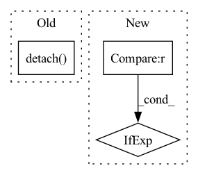

Pattern ID :1966
Before Change
receive next batch of arrays
task = self._ordered_tasks.get(block=True, timeout=timeout)
batch_inputs = [
tensor.detach() .to(device, non_blocking=True).requires_grad_(tensor.requires_grad) for tensor in task.args
]
self._dispatched_tasks[task.uid] = task
self.batch_receiver.recv() // reduce the number of active batchesAfter Change
self, timeout: Optional[float] = None, device: Optional[torch.device] = None
) -> Tuple[Any, List[torch.Tensor]]:
receive next batch of arrays
device = device if device is not None else self.device
task = self._ordered_tasks.get(block=True, timeout=timeout)
batch_inputs = [_move_to_device_if_tensor(arg, device, share_memory=False) for arg in task.args]
self._dispatched_tasks[task.uid] = taskIn pattern: SUPERPATTERN
Frequency: 4
Non-data size: 3
Instances Fragment ID: 8758023
Project Name: bigscience-workshop/distributed-bloom
Commit Name: ae9e71fe8eb4e746c97852bd55977d943eba9df9
Time: 2023-01-03
Author: justheuristic@gmail.com
File Name: src/petals/server/task_pool.py
M Class Name: PrioritizedTaskPool
N Class Name: PrioritizedTaskPool
M Method Name: load_batch_to_runtime(3)
N Method Name: load_batch_to_runtime(3)
M Parent Class: TaskPoolBase
N Parent Class: TaskPoolBase
M File Name: src/petals/server/task_pool.py
N File Name: src/petals/server/task_pool.py
M Start Line: 134
M End Line: 134
N Start Line: 135
N End Line: 137
Before Change
is_tensor = True
if dets.is_cuda:
device_id = dets.get_device()
dets_np = dets.detach() .cpu().numpy()
elif isinstance(dets, np.ndarray):
is_tensor = False
dets_np = detsAfter Change
dets_th = dets
elif isinstance(dets, np.ndarray):
is_numpy = True
device = "cpu" if device_id is None else "cuda:{}".format(device_id)
dets_th = torch.from_numpy(dets).to(device)
else:
raise TypeError( Fragment ID: 8758025
Project Name: wxinlong/solo
Commit Name: e421e832883241bd7831bf77dc31d5fb31d7da58
Time: 2019-04-06
Author: chenkaidev@gmail.com
File Name: mmdet/ops/nms/nms_wrapper.py
M Class Name: AnonimousClass
N Class Name: AnonimousClass
M Method Name: nms(3)
N Method Name: nms(3)
M Parent Class:
N Parent Class:
M File Name: mmdet/ops/nms/nms_wrapper.py
N File Name: mmdet/ops/nms/nms_wrapper.py
M Start Line: 11
M End Line: 33
N Start Line: 26
N End Line: 49
Before Change
original_predictions = self._original_predictions
// handle only first image (batch=1)
predictions_in_xyxy_format = original_predictions.xyxy[0].cpu().detach() .numpy()
object_prediction_list = []
After Change
object_prediction_list_per_image = []
for image_ind, image_predictions_in_xyxy_format in enumerate(original_predictions.xyxy):
shift_amount = shift_amount_list[image_ind]
full_shape = None if full_shape_list is None else full_shape_list[image_ind]
object_prediction_list = []
// process predictions Fragment ID: 8758024
Project Name: obss/sahi
Commit Name: 248cd2df7d3450eea48c0f03b75d1b7d0111dcf4
Time: 2021-12-19
Author: 34196005+fcakyon@users.noreply.github.com
File Name: sahi/model.py
M Class Name: Yolov5DetectionModel
N Class Name: Yolov5DetectionModel
M Method Name: _create_object_prediction_list_from_original_predictions(3)
N Method Name: _create_object_prediction_list_from_original_predictions(3)
M Parent Class: DetectionModel
N Parent Class: DetectionModel
M File Name: sahi/model.py
N File Name: sahi/model.py
M Start Line: 470
M End Line: 509
N Start Line: 433
N End Line: 484